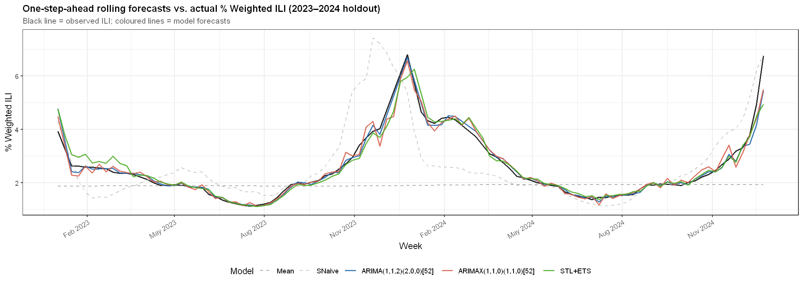
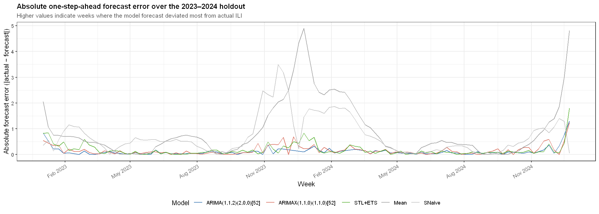

Section 01
Project Overview
This project compares classical and exogenous-augmented forecasting approaches for influenza-like illness trends. The goal is to identify a model that balances interpretability, accuracy, and robustness under rolling out-of-sample validation.
Section 02
Model Comparison
ARIMA(1,1,2)(2,0,0)[52]
STL+ETS
ARIMAX(1,1,0)(1,1,0)[52]
Mean
SNaive
ARIMA outperforms ARIMAX on holdout RMSE despite a higher AIC (371 vs. 380), suggesting the lagged age-group covariates add limited out-of-sample signal.
Section 03
Key Visualizations


Section 04
Methodology Notes
- CDC FluView national weekly % weighted ILI data (2002–2024), comprising 1,200 observations. Three duplicate week rows resolved by within-week averaging; 384 pre-2010 rows with missing age_25_49 / age_50_64 imputed as age_25_64 / 2, consistent with CDC's post-2009 reporting change. Residual ILI gaps filled by linear interpolation.
- Train/holdout split: final 104 weeks (2023 W01 – 2024 W52) held out as the evaluation window; remaining 1,094 weeks used for training. All models evaluated via rolling one-step-ahead RMSE using an expanding window — fable's stretch_tsibble() for ETS and ARIMA; a custom loop via base arima() for ARIMAX, required because fable does not natively support external regressors in rolling windows.
- ARIMAX covariate selection via CCF analysis on first-differenced series. age_5_24 showed the strongest lead-1 correlation with ILI (CCF = 0.585), followed by age_0_4 (0.422), age_25_49 (0.304), age_50_64 (0.288), and age_65 (0.156). A one-week lag was applied before differencing to prevent future data leakage.
- Limitations: ETS suppresses seasonality for periods > 24 (period = 52 here), so STL handles all seasonal structure while ETS operates only on the seasonally adjusted component. ARIMAX regressor coefficients were near-zero with several NaN standard errors, suggesting the lagged age-group covariates are largely redundant with the ILI series itself — likely because age-group counts are a constituent of the ILI aggregate.
Repository
Code, notebooks, and forecasting workflow documentation.